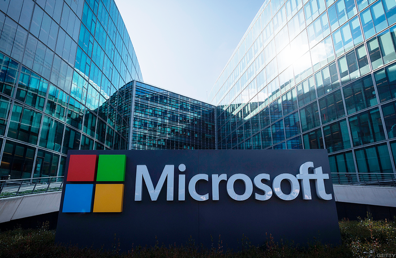
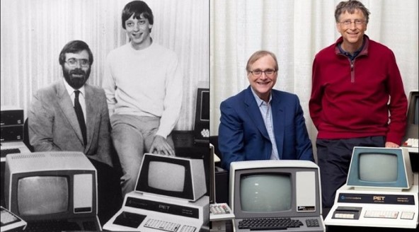
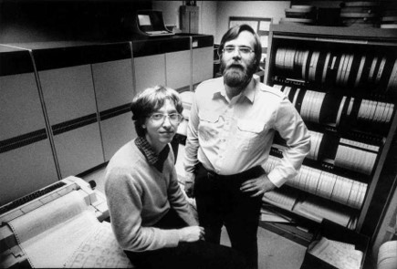
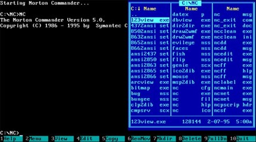
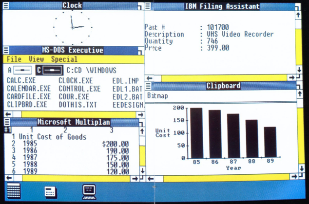
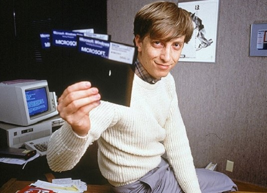
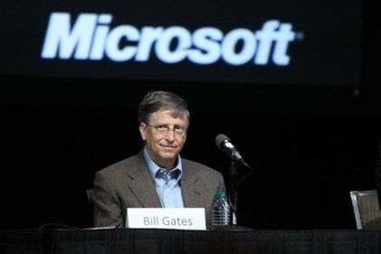

Microsoft là một tập đoàn đa quốc gia của Hoa Kỳ đặt trụ sở chính tại Redmond, Washington; chuyên phát triển, sản xuất, kinh doanh bản quyền phần mềm và hỗ trợ trên diện rộng các sản phẩm và dịch vụ liên quan đến máy tính. Nếu tính theo doanh thu thì Microsoft là hãng sản xuất phần mềm lớn nhất thế giới. Nó cũng được gọi là "một trong những công ty có giá trị nhất trên thế giới".
Trụ sở chính của Microsoft
Những người bạn thời thơ ấu Bill Gates và Paul Allen đã tìm cách tạo ra một doanh nghiệp sử dụng các kỹ năng họ chia sẻ cho nhau trong lập trình máy tính. Năm 1972, họ thành lập công ty đầu tiên của mình, tên là Traf-O-Data, đã bán một máy tính thô sơ để theo dõi và phân tích dữ liệu giao thông ô tô. Số ra tháng 1 năm 1975 của tạp chí Điện tử phổ biến có Máy vi tính Altair 8800 của Micro Thiết bị và Máy đo từ xa (MITS), đã truyền cảm hứng để đề xuất rằng họ có thể lập trình trình thông dịch BASIC cho thiết bị. Allen đã được nhận làm việc trên một trình giả lập cho Altair trong khi Gates phát triển trình thông dịch. Mặc dù họ đã phát triển trình thông dịch trên một trình giả lập chứ không phải thiết bị thực tế, nhưng nó hoạt động hoàn hảo khi họ trình diễn trình thông dịch cho MITS ở Albuquerque, New Mexico vào tháng 3 năm 1975. MITS đồng ý phân phối nó, tiếp thị nó dưới dạng Altair BASIC.
Paul Allen và Bill Gates
Gates và Allen chính thức thành lập Microsoft vào ngày 4 tháng 4 năm 1975, với Gates là Giám đốc điều hành. Tên ban đầu của "Micro-Soft" (viết tắt của phần mềm máy vi tính) được đề xuất bởi Allen.
Những năm đầu của Microsoft, mọi nhân viên trong công ty cũng phải kiêm luôn hoạt động kinh doanh của nó. Gates giám sát khâu kinh doanh đến từng chi tiết, nhưng vẫn tiếp tục tham gia viết mã chương trình. Trong 5 năm đầu, cá nhân ông thường đánh giá từng dòng lệnh trong các phần mềm đóng gói của công ty, và thường viết lại từng phần của chúng cho đến khi ông thấy phù hợp.
Sau khi các cuộc đàm phán với Digital Research thất bại, IBM (International Business Machines, là một tập đoàn công nghệ máy tính có lịch sử hình thành lâu đời) đã trao hợp đồng cho Microsoft vào tháng 11 năm 1980 để cung cấp một phiên bản hệ điều hành CP/M, được thiết lập để sử dụng trong máy tính cá nhân IBM (IBM PC) sắp tới. Đối với thỏa thuận này, Microsoft đã mua một bản sao CP/M có tên 86-DOS từ Seattle Computer Products, được đặt tên là MS-DOS. Sau khi phát hành IBM PC vào tháng 8 năm 1981, Microsoft vẫn giữ quyền sở hữu MS-DOS.
Giao diện MS-DOS
Do nhiều yếu tố khác nhau, chẳng hạn như lựa chọn phần mềm có sẵn của MS-DOS, Microsoft cuối cùng đã trở thành nhà cung cấp hệ điều hành PC hàng đầu. Ngoài ra Microsoft còn kinh doanh hệ điều hành riêng của mình có tên là Xenix, dù MS-DOS vẫn là HĐH củng cố sự thống trị của công ty. Năm 1983 Allen đã từ chức Microsoft do phát bệnh Hodgkin.
Mặc dù MS-DOS là hệ điều hành rất phổ biến trong suốt thập niên 1980 và đầu thập niên 1990. Nhưng việc chỉ hỗ trợ làm việc đơn nhiệm (tại mỗi thời điểm chỉ cho phép chạy một ứng dụng duy nhất), điều này làm cho Bill Gates và những người trong công ty Microsoft nổ lực để đưa ra một hệ điều hành mới, đó là lí do Windows ra đời.
Việc Allen ra đi để lại nhiều mất mát nhưng phần lớn càng củng cố vai trò to lớn của Bill Gates trong kỉ nguyên Microsoft Windows. Trong khi đã bắt đầu cùng phát triển một hệ điều hành mới OS / 2 với IBM vào tháng 8 năm 1985. Microsoft cũng phát hành HĐH riêng của mình là Windows 1.0 (một phần mở rộng đồ họa cho MS-DOS) vào ngày 20 tháng 11 năm 1985.
Giao diện windows 1.0
Ngày 1 tháng 8 năm 1988, tại COMDEX ở Las Vegas Microsoft Office (hoặc đơn giản là Office) là tên của một bộ ứng dụng văn phòng gồm các chương trình, máy chủ và dịch vụ phát triển bởi Microsoft, được giới thiệu lần đầu bởi Bill Gates. Phiên bản đầu tiên nó chỉ gồm Microsoft Word, Microsoft Excel và Microsoft PowerPoint. Ngày 22 tháng 5 năm 1990 Windows 3.0 có đồ họa giao diện người dùng được sắp xếp hợp lý được phát hành. Cả hai chẳng mấy chót chiếm ưu thế trên thị trường, doanh thu Microsoft tăng vọt.
Bill Gates giới thiệu đĩa cài windows
Trong khi đó, công ty đang làm việc trên HĐH 32 bit, Microsoft Windows NT, dựa trên bản sao mã OS / 2. Nó được xuất xưởng vào ngày 21 tháng 7 năm 1993, với một nhân mô-đun mới và giao diện lập trình ứng dụng Win32, giúp việc chuyển từ Windows 16-bit (dựa trên MS-DOS) sang Window 32-bit trở nên dễ dàng hơn. Sau khi Microsoft thông báo cho IBM về NT, mối quan hệ đối tác dự án OS / 2 đã xấu đi và không lâu sau cũng chấm dứt hợp tác.
Sau đó Microsoft đã trải qua nhiều thời kì phát triển:
+1995-2005:Bước vào Web, windows 95, windows XP, và Xbox.
+2007–2011: Microsoft Azure, Windows Vista, Windows 7, và Microsoft Stores.
+2011–2014: Windows 8/8.1, Xbox One, Outlook.com và thiết bị máy tính Surface.
+2014–nay: Windows 10, Microsoft Edge và HoloLens.
Xuyên suốt các thời kì đó, Gates có trách nhiệm chính trong chiến lược sản phẩm của công ty. Ông đã tích cực mở rộng phạm vi sản phẩm của công ty, và ở bất cứ nơi nào Microsoft đạt được vị trí thống trị của nó thì ông mạnh mẽ bảo vệ vị thế này. Ông đạt được danh tiếng vượt xa so với những người khác.
Vai trò của Gates tại Microsoft trong phần lớn lịch sử của tập đoàn chủ yếu là người quản lý và điều hành. Tuy nhiên, ông cũng tham gia vào phát triển phần mềm trong những ngày đầu của công ty, đặc biệt về các sản phẩm ngôn ngữ lập trình. Bill Gates dần dần làm việc ít hơn ở Microsoft, song việc Microsoft đã và đang thừa hưởng thành quả của ông là điều không thể bàn cãi. Việc cung cấp hệ điều hành MS-DOS và Windows đã làm nền tảng cho bước nhảy vọt của lĩnh vực máy tính trong suốt 70 năm tồn tại và phát triển.
Trong thế kỉ 21, cùng với sự phát triển mạnh mẽ của công nghệ 4.0 chúng ta càng hiểu rõ vai trò tối ưu của máy tính, các hệ thống phần mềm và trí tuệ nhân tạo. Tất cả điều đó không ít thì nhiều xuất phát từ những nổ lực mà Microsoft nói chung cũng như của Bill Gates nói riêng đem loại cho nhân loại. Việc tiếp cận khoa học kĩ thuật ngoài yếu bản thân thì còn có nhiều tác động từ các tập đoàn đi đầu về công nghệ mà Microsoft là một ví dụ điển hình.
Bill Gates phát biểu ở Microsoft
Microsoft đã và đang là tập đoàn công nghệ lớn nhất thế giới vừa mở ra cơ hội việc làm cho nhiều kĩ sư máy tính, vừa giải quyết được những vấn đề công nghệ của nhân loại. Cho đến nay thì Bill Gates vẫn luôn là gương mặt đại diện cho Microsoft cả về công nghệ lẫn tài chính, ông vẫn giữ chức chủ tịch tập đoàn Microsoft khi đang nắm giữ 8 phần trăm cổ phiếu (nhiều nhất trong tất cả)
Nguồn: Wikipedia